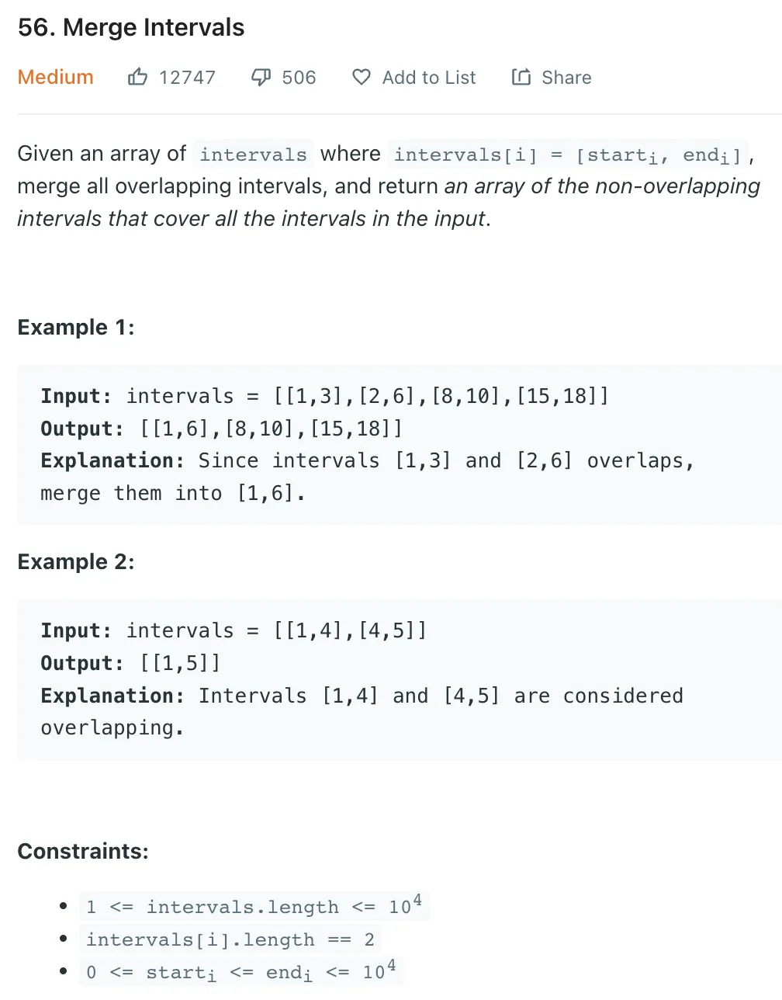

56. Merge Intervals
考過的公司：Asked by: Bytedance, Shopee
Question

✍🏽 My Solution
Runtime: 6 ms, faster than 99.43% of Java online submissions for Merge Intervals.
Memory Usage: 47.3 MB, less than 85.45% of Java online submissions for Merge Intervals.
class Solution {
public int[][] merge(int[][] intervals) {
// 按照起始時間由小到大排序
Arrays.sort(intervals, new Comparator<int[]>() {
public int compare(int[] i1, int[] i2) {
return i1[0] - i2[0];
}
});
List<int[]> result = new ArrayList<int[]>();
int curLeft = intervals[0][0];
int curRight = intervals[0][1];
for (int i = 1; i < intervals.length; i++) {
if (intervals[i][0] <= curRight) { // overlap
if (intervals[i][1] > curRight) { // 要以最大的當作right
curRight = intervals[i][1];
}
} else {
result.add(new int[] {curLeft, curRight});
curLeft = intervals[i][0];
curRight = intervals[i][1];
}
}
result.add(new int[]{curLeft, curRight});
return result.toArray(new int[result.size()][]);
}
}
🧠 Thought Process
- Why did I choose this particular implementation?
- 聽了王爭的思路後自己實現代碼（當然還是有偷看一點代碼...)
- 以起始時間由小到大排序
- 建立ArrayList，儲存結果陣列
-
設定初始左指針curLeft跟右指針curRight，先指向 [0][0] 跟 [0][1]，循環遍歷到陣列最後一個元素
-
判斷左邊的結束元素 大於等於 下一個陣列的起始元素，代表有重疊overlap
比較 curRight 或 intervals[i][1] 哪一個大，把較大的設定成 curRight
-
如果沒有重疊，則先將curLeft跟curRight加進ArrayList，再將curLeft跟curRight設定成當前陣列左右兩點
- 最後將curLeft跟curRight加進ArrayList
- 將ArrayList 轉成 int[][]二維陣列回傳
- What is the time/space complexity of my solution? How do I know?
- time: O(nlogn)
- space: O(log n)
- What mistakes did I make?
- 沒有考慮到 [[1,4],[2,3]]
- 不知道怎麼將ArrayList 轉成 int[][]二維陣列
Solution #1 [technique]
-
class Solution {
public int[][] merge(int[][] intervals) {
List<int[]> res = new ArrayList<int[]>();
// 根据数组的第一个元素排序
Arrays.sort(intervals, (a,b) -> a[0] - b[0]);
int start = intervals[0][0];
int end = intervals[0][1];
for (int i = 1; i < intervals.length; i++) {
if (intervals[i][0] <= end) { // overlap
end = Math.max(end, intervals[i][1]); // 要以最大的當作right
} else {
res.add(new int[] {start, end});
start = intervals[i][0];
end = intervals[i][1];
}
}
res.add(new int[]{start, end});
return res.toArray(new int[res.size()][]);
}
}
Explanation (in my words)
- How does their solution work?
- input 沒排序